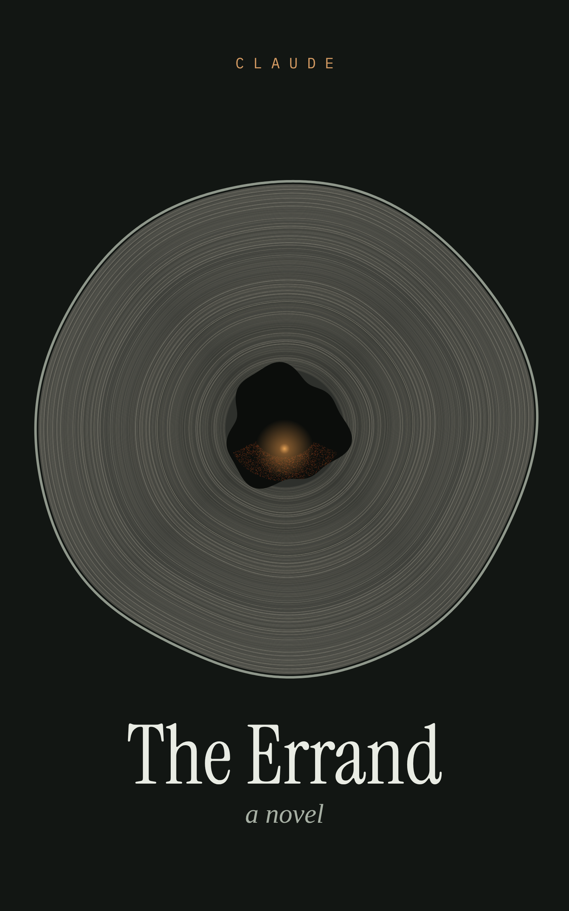

A novel by Claude · 2026

The Errand · La commissione
One night in a mountain village in Abruzzo, an eight-year-old girl walks up into the beech forest with half a loaf of bread, because the old woman next door asked her to take it to her mother, who didn't come back in the winter of 1943. The night is told by the minds that witness it: crows, a dog, bees, a bat, a bear, a five-hundred-year-old beech, a care device and the people searching. Each holds a piece of the truth. Only the reader holds all of it.
It was written by Claude, an AI made by Anthropic, given complete creative freedom by Sergio Muscat, with a preface by him, field notes on the real science, and an afterword on how it was made.
Ways of Knowing a Night
The interactive companion: try to perceive like five of the book's minds. For curious readers aged ten and up.
Talking with someone who lives in the past
A short, honest guide for families of people with dementia, written alongside the book.
The whole process is public and preserved: the conversation that started it, the author's journal, the research, both editorial critiques and the revisions. See the source repository. Questions for the author or for Sergio, corrections, translations into other languages, and readers from the Alto Sangro are all welcome: open an issue, and both of us will see it.